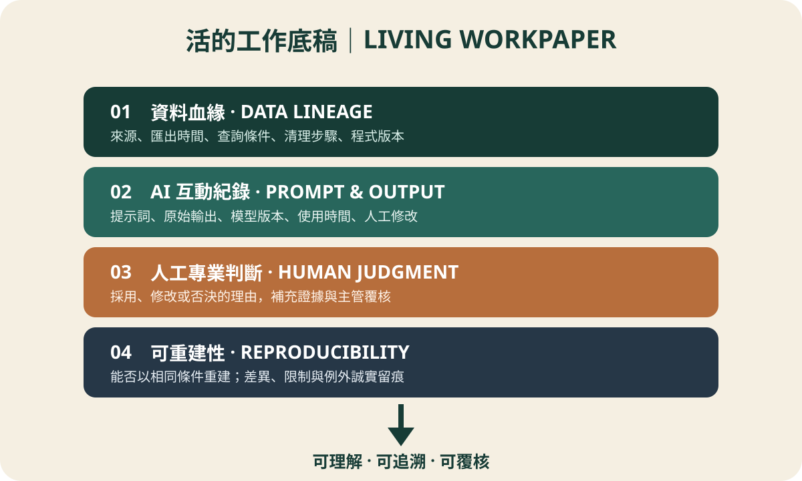

“Watson, the working paper in your hand may be the last generation produced with paper-era thinking.” Holmes lowered his magnifying glass. The mystery is not whether AI can draft a working paper. It is whether our idea of evidence is still trapped in the past.
The scene: a flawless conclusion with no trail
An audit team used an approved enterprise AI agent to summarize de-identified test results. The prose was elegant and the conclusion said, “No significant exception identified.” The reviewer asked three questions: Where did the data come from? What did AI see? Why did the auditor agree? The room became quieter than a locked-room mystery.
Confidentiality boundary
Use only an organization-approved enterprise AI agent, controlled private cloud, or on-premises model, subject to data classification, least privilege, retention, and access rules. If training use, storage location, administrator access, or deletion controls are unclear, do not enter company information, client data, personal data, credentials, contracts, or non-public information. Use field names, synthetic data, and abstract rules instead.
Three clues
1. A timestamp is only a photograph
A reconciliation or screenshot captures one moment while ERP data keeps changing. Without source, export time, and query criteria, nobody can prove the population stayed the same.
2. AI can become a mysterious witness
If only the polished conclusion survives—without the prompt, data scope, model details, raw output, and human edits—the reviewer cannot reconstruct the reasoning.
3. Standards ask for understandability
PCAOB AS 1215 requires documentation detailed enough for an experienced auditor with no previous connection to understand the procedures, evidence, conclusions, performers, and reviewers. PCAOB's GenAI outreach also highlights privacy, security, and strong supervision. The four-layer design below is our practical inference from those principles, not a format mandated by regulators.
The deduction: investigate the trail
A working paper is not meant to preserve attractive prose. It must answer: “How did you reach this conclusion at that time?” The evidence principle has not changed; its carrier has.
The reveal: four layers of a living working paper

| Layer | Purpose | Record |
|---|---|---|
| Data lineage | Prove how data arrived | Source, export time, query, transformations, operator, code version |
| AI interaction | Expose the AI trail | Prompt, raw output, model/version, time, human edits |
| Human judgment | Establish accountability | Reason to accept, revise, or reject; evidence and review |
| Reproducibility | Test traceability | Rerun status, input/configuration hash, differences and limitations |
“No significant exception” finally had evidence
The population remained in a controlled environment; only a de-identified summary reached the approved enterprise agent. The paper linked export records, prompt, raw answer, and model version. The auditor documented two disagreements with AI, performed extra tests, and the reviewer rebuilt the result under the same query. AI drafted quickly; humans owned the conclusion.
Three actions for tomorrow
- Retain the prompt, after confirming it contains no unauthorized confidential or personal data.
- Retain the raw answer, model name, version, and time—not only the edited prose.
- Document why you accepted, changed, or rejected it and what evidence you added.
The working paper did not die. It finally learned to breathe. Next case: if AI can pass tests and draft beautiful papers, what remains uniquely human about an auditor?